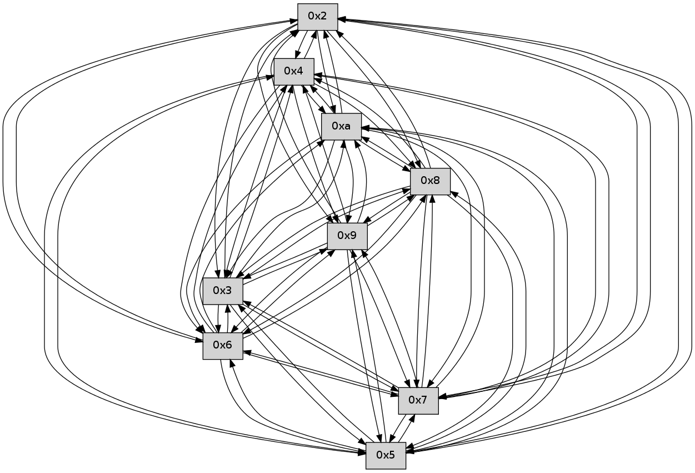

>> << IDX [start] -100 -25 -5 +0 +5 +25 +100 [110.00833416]
 Previous packets
----------------------------------------------------------------------
105.249561 beacon01(faad) #0 coord=01,02,03,04,05,06,07,0a,09,08 cycle=688.0ms assoc
-- color-indic=0 64 18 cf
105.259543 beacon02(faad) #0 coord=01,02,03,04,05,06,07,0a,09,08 cycle=688.0ms assoc 64 8b fe
105.269543 beacon03(faad) #0 coord=01,02,03,04,05,06,07,0a,09,08 cycle=688.0ms assoc 64 f1 b3
105.279546 beacon04(faad) #0 coord=01,02,03,04,05,06,07,0a,09,08 cycle=688.0ms assoc 64 86 59
105.289545 beacon05(faad) #0 coord=01,02,03,04,05,06,07,0a,09,08 cycle=688.0ms assoc 64 fc 14
105.299545 beacon06(faad) #0 coord=01,02,03,04,05,06,07,0a,09,08 cycle=688.0ms assoc 64 72 c3
105.309544 beacon07(faad) #0 coord=01,02,03,04,05,06,07,0a,09,08 cycle=688.0ms assoc 64 08 8e
105.319549 beacon0a(faad) #0 coord=01,02,03,04,05,06,07,0a,09,08 cycle=688.0ms assoc 64 79 85
105.329548 beacon09(faad) #0 coord=01,02,03,04,05,06,07,0a,09,08 cycle=688.0ms assoc 64 f7 52
105.339549 beacon08(faad) #0 coord=01,02,03,04,05,06,07,0a,09,08 cycle=688.0ms assoc 64 8d 1f
105.350719 [Hello(10): seq=4 sym=6,3,2,5,9,7,4 asym=8 sysInfo= stat=6:1,0,0,0/3:4,0,0,0/2:3,0,0,0/5:3,0,0,0/9:2,0,0,0/7:0,0,0,0/4:0,0,0,0/8:1,0,0,0]
105.353698 [Hello(9): seq=15 sym=5,2,3,4,7,6,8,10 sysInfo= stat=5:14,0,0,0/2:12,0,0,0/3:10,0,0,0/4:14,0,0,0/7:5,0,0,0/6:6,0,0,0/8:6,0,0,0/10:0,0,0,0]
105.360240 [Hello(8): seq=15 sym=5,2,3,4,7,6,9,10 sysInfo= stat=5:12,0,0,0/2:13,0,0,0/3:13,0,0,0/4:12,0,0,0/7:5,0,0,0/6:7,0,0,0/9:5,0,0,0/10:1,0,0,0]
105.368674 [Hello(6): seq=73 sym=2,3,5,4,7,9,8,10 sysInfo= stat=2:15,0,0,0/3:0,0,0,0/5:14,0,0,0/4:15,0,0,0/7:4,0,0,0/9:6,0,0,0/8:6,0,0,0/10:2,0,0,0]
105.377788 [Hello(7): seq=73 sym=2,3,5,6,4,8,9,10 sysInfo= stat=2:5,0,0,0/3:0,0,0,0/5:14,0,0,0/6:11,0,0,0/4:15,0,0,0/8:7,0,0,0/9:7,0,0,0/10:2,0,0,0]
----------------------------------------------------------------------
106.037693 beacon01(faad) #0 coord=01,02,03,04,05,06,07,0a,09,08 cycle=688.0ms assoc
-- color-indic=0 64 cc fa
106.047676 beacon02(faad) #0 coord=01,02,03,04,05,06,07,0a,09,08 cycle=688.0ms assoc 64 5f cb
106.057676 beacon03(faad) #0 coord=01,02,03,04,05,06,07,0a,09,08 cycle=688.0ms assoc 64 25 86
106.067677 beacon04(faad) #0 coord=01,02,03,04,05,06,07,0a,09,08 cycle=688.0ms assoc 64 52 6c
106.077679 beacon05(faad) #0 coord=01,02,03,04,05,06,07,0a,09,08 cycle=688.0ms assoc 64 28 21
106.087676 beacon06(faad) #0 coord=01,02,03,04,05,06,07,0a,09,08 cycle=688.0ms assoc 64 a6 f6
106.097676 beacon07(faad) #0 coord=01,02,03,04,05,06,07,0a,09,08 cycle=688.0ms assoc 64 dc bb
106.107683 beacon0a(faad) #0 coord=01,02,03,04,05,06,07,0a,09,08 cycle=688.0ms assoc 64 ad b0
106.117683 beacon09(faad) #0 coord=01,02,03,04,05,06,07,0a,09,08 cycle=688.0ms assoc 64 23 67
106.127681 beacon08(faad) #0 coord=01,02,03,04,05,06,07,0a,09,08 cycle=688.0ms assoc 64 59 2a
106.143441 [Hello(4): seq=74 sym=5,7,6,2,3,9,8,10 sysInfo= stat=5:14,0,0,0/7:0,0,0,0/6:9,0,0,0/2:13,0,0,0/3:15,0,0,0/9:15,0,0,0/8:13,0,0,0/10:4,0,0,0]
106.149962 [Hello(5): seq=74 sym=7,6,4,2,3,9,8,10 sysInfo= stat=7:5,0,0,0/6:2,0,0,0/4:8,0,0,0/2:6,0,0,0/3:4,0,0,0/9:15,0,0,0/8:13,0,0,0/10:4,0,0,0]
----------------------------------------------------------------------
106.825825 beacon01(faad) #0 coord=01,02,03,04,05,06,07,0a,09,08 cycle=688.0ms assoc
-- color-indic=0 64 70 ff
106.835806 beacon02(faad) #0 coord=01,02,03,04,05,06,07,0a,09,08 cycle=688.0ms assoc 64 e3 ce
106.845807 beacon03(faad) #0 coord=01,02,03,04,05,06,07,0a,09,08 cycle=688.0ms assoc 64 99 83
106.855807 beacon04(faad) #0 coord=01,02,03,04,05,06,07,0a,09,08 cycle=688.0ms assoc 64 ee 69
106.865810 beacon05(faad) #0 coord=01,02,03,04,05,06,07,0a,09,08 cycle=688.0ms assoc 64 94 24
106.875807 beacon06(faad) #0 coord=01,02,03,04,05,06,07,0a,09,08 cycle=688.0ms assoc 64 1a f3
106.885809 beacon07(faad) #0 coord=01,02,03,04,05,06,07,0a,09,08 cycle=688.0ms assoc 64 60 be
106.895814 beacon0a(faad) #0 coord=01,02,03,04,05,06,07,0a,09,08 cycle=688.0ms assoc 64 11 b5
106.905813 beacon09(faad) #0 coord=01,02,03,04,05,06,07,0a,09,08 cycle=688.0ms assoc 64 9f 62
106.915813 beacon08(faad) #0 coord=01,02,03,04,05,06,07,0a,09,08 cycle=688.0ms assoc 64 e5 2f
106.926947 [Hello(8): seq=16 sym=5,2,3,4,7,6,9,10 sysInfo= stat=5:13,0,0,0/2:14,0,0,0/3:13,0,0,0/4:13,0,0,0/7:6,0,0,0/6:8,0,0,0/9:5,0,0,0/10:1,0,0,0]
106.929631 [Hello(6): seq=74 sym=2,3,5,4,7,9,8,10 sysInfo= stat=2:15,0,0,0/3:1,0,0,0/5:15,0,0,0/4:0,0,0,0/7:5,0,0,0/9:6,0,0,0/8:6,0,0,0/10:2,0,0,0]
106.932830 [Hello(7): seq=74 sym=2,3,5,6,4,8,9,10 sysInfo= stat=2:6,0,0,0/3:0,0,0,0/5:15,0,0,0/6:11,0,0,0/4:0,0,0,0/8:7,0,0,0/9:7,0,0,0/10:2,0,0,0]
106.935236 [Hello(10): seq=5 sym=6,3,2,5,9,8,7,4 sysInfo= stat=6:2,0,0,0/3:5,0,0,0/2:3,0,0,0/5:4,0,0,0/9:3,0,0,0/8:2,0,0,0/7:1,0,0,0/4:1,0,0,0]
106.939702 [Hello(9): seq=16 sym=5,2,3,4,7,6,8,10 sysInfo= stat=5:15,0,0,0/2:13,0,0,0/3:10,0,0,0/4:15,0,0,0/7:6,0,0,0/6:7,0,0,0/8:7,0,0,0/10:0,0,0,0]
----------------------------------------------------------------------
107.613957 beacon01(faad) #0 coord=01,02,03,04,05,06,07,0a,09,08 cycle=688.0ms assoc
-- color-indic=0 64 b4 f1
107.623939 beacon02(faad) #0 coord=01,02,03,04,05,06,07,0a,09,08 cycle=688.0ms assoc 64 27 c0
107.633941 beacon03(faad) #0 coord=01,02,03,04,05,06,07,0a,09,08 cycle=688.0ms assoc 64 5d 8d
107.643941 beacon04(faad) #0 coord=01,02,03,04,05,06,07,0a,09,08 cycle=688.0ms assoc 64 2a 67
107.653939 beacon05(faad) #0 coord=01,02,03,04,05,06,07,0a,09,08 cycle=688.0ms assoc 64 50 2a
107.663941 beacon06(faad) #0 coord=01,02,03,04,05,06,07,0a,09,08 cycle=688.0ms assoc 64 de fd
107.673942 beacon07(faad) #0 coord=01,02,03,04,05,06,07,0a,09,08 cycle=688.0ms assoc 64 a4 b0
107.683945 beacon0a(faad) #0 coord=01,02,03,04,05,06,07,0a,09,08 cycle=688.0ms assoc 64 d5 bb
107.693946 beacon09(faad) #0 coord=01,02,03,04,05,06,07,0a,09,08 cycle=688.0ms assoc 64 5b 6c
107.703946 beacon08(faad) #0 coord=01,02,03,04,05,06,07,0a,09,08 cycle=688.0ms assoc 64 21 21
107.715715 [Hello(2): seq=75 sym=4,5,7,6,3,9,8,10 sysInfo= stat=4:0,0,0,0/5:6,0,0,0/7:10,0,0,0/6:2,0,0,0/3:0,0,0,0/9:14,0,0,0/8:14,0,0,0/10:5,0,0,0]
107.718100 [Hello(3): seq=75 sym=5,7,6,4,2,8,9,10 sysInfo= stat=5:12,0,0,0/7:2,0,0,0/6:7,0,0,0/4:11,0,0,0/2:15,0,0,0/8:0,0,0,0/9:13,0,0,0/10:5,0,0,0]
107.723987 [Hello(5): seq=75 sym=7,6,4,2,3,9,8,10 sysInfo= stat=7:6,0,0,0/6:3,0,0,0/4:8,0,0,0/2:6,0,0,0/3:4,0,0,0/9:0,0,0,0/8:14,0,0,0/10:5,0,0,0]
107.728470 [Hello(4): seq=75 sym=5,7,6,2,3,9,8,10 sysInfo= stat=5:15,0,0,0/7:1,0,0,0/6:10,0,0,0/2:13,0,0,0/3:15,0,0,0/9:0,0,0,0/8:14,0,0,0/10:5,0,0,0]
----------------------------------------------------------------------
108.402089 beacon01(faad) #0 coord=01,02,03,04,05,06,07,0a,09,08 cycle=688.0ms assoc
-- color-indic=0 64 08 f4
108.412072 beacon02(faad) #0 coord=01,02,03,04,05,06,07,0a,09,08 cycle=688.0ms assoc 64 9b c5
108.422071 beacon03(faad) #0 coord=01,02,03,04,05,06,07,0a,09,08 cycle=688.0ms assoc 64 e1 88
108.432072 beacon04(faad) #0 coord=01,02,03,04,05,06,07,0a,09,08 cycle=688.0ms assoc 64 96 62
108.442072 beacon05(faad) #0 coord=01,02,03,04,05,06,07,0a,09,08 cycle=688.0ms assoc 64 ec 2f
108.452073 beacon06(faad) #0 coord=01,02,03,04,05,06,07,0a,09,08 cycle=688.0ms assoc 64 62 f8
108.462072 beacon07(faad) #0 coord=01,02,03,04,05,06,07,0a,09,08 cycle=688.0ms assoc 64 18 b5
108.472076 beacon0a(faad) #0 coord=01,02,03,04,05,06,07,0a,09,08 cycle=688.0ms assoc 64 69 be
108.482078 beacon09(faad) #0 coord=01,02,03,04,05,06,07,0a,09,08 cycle=688.0ms assoc 64 e7 69
108.492077 beacon08(faad) #0 coord=01,02,03,04,05,06,07,0a,09,08 cycle=688.0ms assoc 64 9d 24
108.503524 [Hello(8): seq=17 sym=5,2,3,4,7,6,9,10 sysInfo= stat=5:14,0,0,0/2:15,0,0,0/3:14,0,0,0/4:14,0,0,0/7:7,0,0,0/6:9,0,0,0/9:6,0,0,0/10:2,0,0,0]
108.505904 [Hello(10): seq=6 sym=6,3,2,5,9,8,7,4 sysInfo= stat=6:2,0,0,0/3:6,0,0,0/2:4,0,0,0/5:5,0,0,0/9:4,0,0,0/8:2,0,0,0/7:1,0,0,0/4:2,0,0,0]
108.509417 [Hello(6): seq=75 sym=2,3,5,4,7,9,8,10 sysInfo= stat=2:0,0,0,0/3:2,0,0,0/5:0,0,0,0/4:1,0,0,0/7:6,0,0,0/9:7,0,0,0/8:6,0,0,0/10:3,0,0,0]
108.517250 [Hello(9): seq=17 sym=5,2,3,4,7,6,8,10 sysInfo= stat=5:0,0,0,0/2:14,0,0,0/3:11,0,0,0/4:0,0,0,0/7:6,0,0,0/6:7,0,0,0/8:7,0,0,0/10:0,0,0,0]
109.260208 beacon0a(faad) #0 coord=01,02,03,04,05,06,07,0a,09,08 cycle=688.0ms assoc 64 5d a6
----------------------------------------------------------------------
109.978352 beacon01(faad) #0 coord=01,02,03,04,05,06,07,0a,09,08 cycle=688.0ms assoc
-- color-indic=0 64 80 e9
109.988334 beacon02(faad) #0 coord=01,02,03,04,05,06,07,0a,09,08 cycle=688.0ms assoc 64 13 d8
109.998335 beacon03(faad) #0 coord=01,02,03,04,05,06,07,0a,09,08 cycle=688.0ms assoc 64 69 95